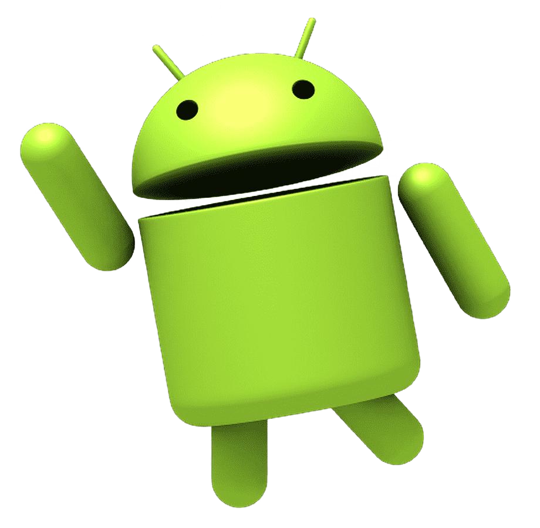
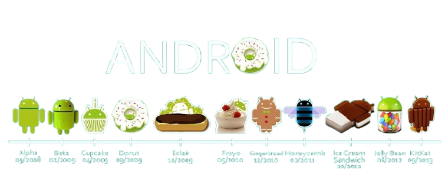

A história do Android
O Android é um dos sistemas operacionais mais conhecidos do mundo. Atualmente, ele está presente em uma enorme variedade de dispositivos, principalmente smartphones e tablets. Mas você já parou para pensar como surgiu o Android e de onde veio o simpático robô verde que representa o sistema?
Neste pequeno projeto, vamos conhecer um pouco da história do Android, entender a origem do seu mascote e descobrir algumas curiosidades interessantes sobre esse sistema operacional.
O Android surgiu🔗 inicialmente como um projeto de uma empresa chamada Android Inc., fundada em 2003 por Andy Rubin, Rich Miner, Nick Sears e Chris White.
No começo, o objetivo da empresa era desenvolver um sistema operacional🔗 para dispositivos móveis. Alguns anos depois, em 2005, o Google adquiriu a Android Inc., fazendo com que o projeto passasse a receber ainda mais investimentos e desenvolvimento.
Em 2007, o Google anunciou🔗 oficialmente o Android🔗 juntamente com a criação da Open Handset Alliance, uma aliança formada por empresas de tecnologia interessadas em desenvolver padrões abertos para dispositivos móveis.
O primeiro aparelho🔗 comercial com Android foi lançado em 2008: o HTC Dream, também conhecido como T-Mobile G1.
Primeiras versões
Ao longo de sua história, o Android recebeu diversas versões🔗. Muitas delas foram associadas a nomes de doces, principalmente nas primeiras gerações do sistema.
Alguns exemplos são:
- Android 1.5 — Cupcake
- Android 1.6 — Donut
- Android 2.0/2.1 — Eclair
- Android 2.2 — Froyo
- Android 2.3 — Gingerbread
- Android 3.0 — Honeycomb
- Android 4.0 — Ice Cream Sandwich
- Android 4.1 — Jelly Bean
- Android 4.4 — KitKat
- Android 5.0 — Lollipop
- Android 6.0 — Marshmallow
- Android 7.0 — Nougat
- Android 8.0 — Oreo
- Android 9 — Pie
Com o passar do tempo, o sistema foi ficando mais moderno, seguro e completo🔗, recebendo novas funções e melhorias em sua interface.
O mascote do Android
Quando pensamos no Android, provavelmente uma das primeiras coisas que vem à nossa cabeça é o famoso robô verde🔗. O mascote oficial é conhecido como Android Robot e se tornou um dos símbolos mais reconhecíveis do sistema operacional. Seu visual é bastante simples🔗: ele possui uma cabeça verde, duas antenas, dois olhos, um corpo e braços e pernas relativamente simples.

O design do robô foi criado em 2007 pela designer Irina Blok. A proposta era criar um personagem🔗 que pudesse ser facilmente reconhecido e reproduzido.
O resultado foi um personagem simples, simpático e fácil de identificar.
Por que um robô?
A escolha de um robô combina diretamente com a ideia do próprio nome Android, palavra utilizada para designar um ser artificial🔗 com aparência humana.
O personagem ajudou a criar uma identidade visual para o sistema e acabou se tornando tão conhecido quanto o próprio logotipo do Android
As diferentes versões do mascote Ao longo dos anos, o mascote apareceu em diferentes situações e representações. Em eventos relacionados ao Android, por exemplo, era comum encontrar versões🔗 físicas do robô, além de representações em materiais promocionais, sites e produtos.

O personagem também ganhou diferentes formas e estilos em campanhas e comemorações relacionadas ao sistema.
Curiosidades sobre o bugdroid
O Android possui várias curiosidades interessantes. Veja algumas delas:
- 🎨 Ele foi criado pela designer Irina Blok em 2007
- 🟢 Sua cor verde se tornou uma das principais identidades visuais do Android
- 🍭 As primeiras versões do Android receberam nomes de doces
- 🗿 O Google criou estátuas gigantes dos mascotes das versões do Android
- 🧩 O Bugdroid possui várias versões e poses diferentes ao longo dos anos
O Android atualmente
Desde seu lançamento, o Android passou por uma enorme evolução.
Os primeiros aparelhos tinham recursos bastante limitados quando comparados aos smartphones atuais🔗. Hoje, dispositivos Android podem oferecer câmeras avançadas, inteligência artificial, reconhecimento biométrico, telas de alta resolução, conectividade 5G e inúmeras outras tecnologias.
Além dos smartphones, versões e derivados do Android também podem ser encontrados🔗 em diferentes categorias de dispositivos, como:
- Smartphones
- Relógios inteligentes
- Televisores
- Sistemas automotivos
- Dispositivos inteligentes
Criadora
O pequeno robô verde criado por 🔗Irina Blok na conferença de emprego em hoporde na italia tornou si em um símbolo reconhecido por milhões de pessoas.
Irina Blok é uma designer gráfica conhecida principalmente por ter criado o famoso mascote verde do Android, conhecido como Bugdroid🔗. Ela nasceu em São Petersburgo, na Rússia, e posteriormente se mudou para os Estados Unidos com a família. Irina estudou Design Gráfico na San Jose State University e trabalhou no Google.

Em 2007, enquanto fazia parte da equipe responsável pela identidade visual do Android, Irina criou o desenho do robô verde. A ideia era desenvolver🔗 um personagem simples, fácil de reconhecer e que representasse o sistema Android. Para criar o robô, ela se inspirou nos símbolos encontrados nas portas de banheiros, especialmente aqueles usados para representar homens e mulheres. O resultado foi um desenho simples, com uma cabeça verde, duas antenas e um corpo que lembrava um robô.
O Bugdroid acabou se tornando um dos símbolos mais conhecidos do Android e passou a aparecer em campanhas, produtos e materiais relacionados ao sistema🔗. Depois de sua passagem pelo Google, Irina continuou trabalhando como designer e artista em diferentes projetos.
O caminho do Android
O android passou por um grande caminho até o seu extado atual🔗, o video abaixo vai expliicar essa evolução muito bem:
então é isso expero que você tenha gostado de saber mais sobre o android e o seu simpatico android